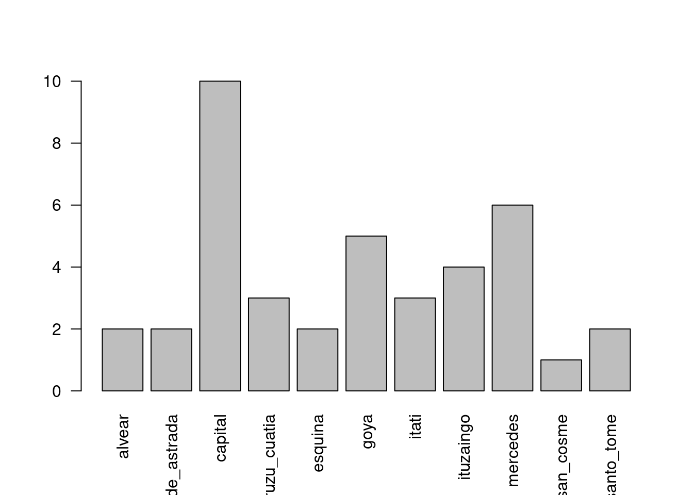
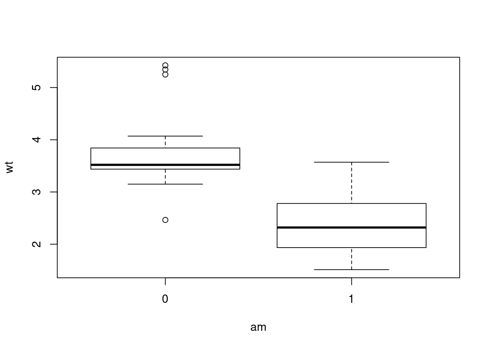
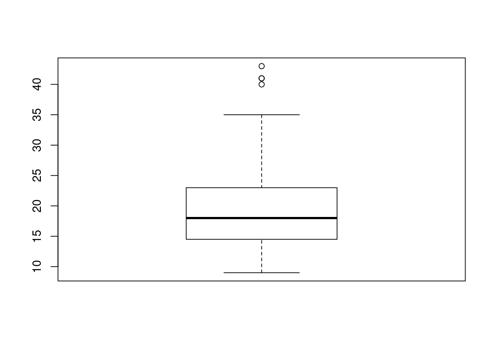

Capítulo 6 Guía 3 - Parámetros y Estimadores
6.1 Ejercicio 1
El gráfico siguiente representa la variable millas por galón del dataset mtcars que se encuentra guardado en R.
- Para la variable millas por galón correspondientes a 4 cilindradas indicar los valores aproximados de la media y los cuantiles 5 y 95.
- ¿Qué cilindrada presentó mayor variabilidad?
- Describa la variable millas por galón, en el grupo de 8 cilindradas.
6.1.1 En R
Podemos graficar mediante la función boxplot() eligiendo las variables ‘mpg’ y ‘cyl’

También podemos elegir otros dos pares de variables
- wt(peso)
- am(transmisión)
En la transmisión automática se observan valores extremos ¿cómo interpreta? ¿En qué caso?
6.1.2 En R
Graficamos ahora con las variables ‘am’ y ‘wt’.

6.2 Ejercicio 2
Los datos de la tabla adjunta corresponden a valores de mg/kg de diferentes fracciones de fósforo en 60 muestras de suelo de la provincia de Corrientes.
- Ingresar los datos a R como vector de valores enteros con la función c().
- Calcular la media, la mediana, mínimo, máximo, el primer y tercer cuartil mediante la función summary() e interpretar los resultados.
- Calcular los percentiles de 5 y 95%, usando la función quantile() e interpretar los resultados.
- Realizar un diagrama de cajas mediante la función boxplot(). Interpretar
6.2.1 En R
Ingresamos los datos como vector de valores enteros
suelo<-c(11, 17, 14, 20, 22, 30, 20, 16, 9, 15, 18, 17, 41, 22, 17, 18, 22, 19, 23, 15,
13, 20, 23, 29, 21, 14, 14, 16, 18, 18, 43, 23, 24, 19, 34, 16, 24, 16, 35, 24,
11, 15, 12, 13, 9, 41, 33, 17, 12, 15, 25, 18, 22, 35, 20, 12, 13, 11, 13, 40)En R podemos usar la funcion summary() para conocer la media, la mediana, valores mínimos, máximos, el primer y tercer cuartil.
## Min. 1st Qu. Median Mean 3rd Qu. Max.
## 9.00 14.75 18.00 20.28 23.00 43.00En R la función quantile() nos permite conocer los cuartiles
## 0% 25% 50% 75% 100%
## 9.00 14.75 18.00 23.00 43.00En R, podemos conocer el percentil 5% y 95% mediante el siguiente comando
## 5% 95%
## 11.00 40.05Un diagrama de cajas lo podemos realizar mediante la funcion boxplot()

6.3 Ejercicio 3
En la siguiente tabla se presentan estimadores de medidas de posición y dispersión de las variables altura de planta, peso de granos, humedad de granos, y rendimiento de dos parcelas de trigo.
- ¿Qué variables presenta mayor variabilidad? Fundamente.
- ¿A qué se debe la diferencia entre la Media y la Mediana en la variable Rendimiento?